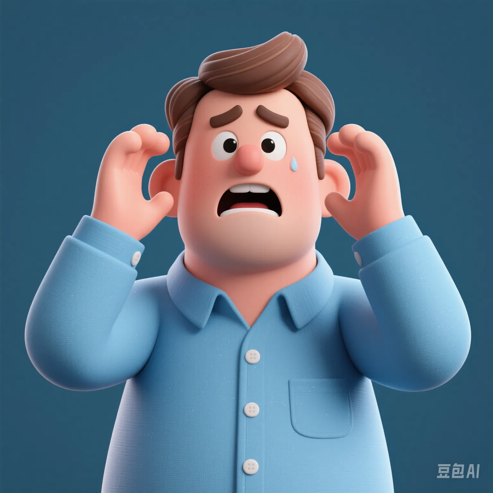

The Global Anxiety Word Cloud: What Are the Most Searched Troubles in 2025?
PeaceLove.Top Insights :2025-04-17
🌍 What Causes the Most Anxiety? Search Engines Know!
According to data collected from global mainstream search engines like Google, Bing, and Baidu in 2025, we've extracted the annual high - frequency "anxiety keywords" list, covering 63 countries and 12 languages around the world.
Global Top 10 Anxiety Keywords Ranking (by Search Frequency)
| Rank | Anxiety Keyword | Representative Search Phrase | Year - on - Year Growth Rate | Representative Regions |
|---|---|---|---|---|
| 1 | Insomnia | "How to fall asleep quickly?" | ↑124% | USA, Japan |
| 2 | Layoffs | "How to save myself when the company lays off employees?" | ↑87% | China, Germany |
| 3 | AI Replacement | "Will my job be replaced by AI?" | ↑106% | UK, South Korea |
| 4 | Emotional Value | "What should I do if I feel I'm not being cared about?" | ↑139% | India, Brazil |
| 5 | Social Phobia | "How to talk to strangers without embarrassment?" | ↑92% | France, Canada |
| 6 | Inflation | "What should I do when things are getting more and more expensive?" | ↑75% | Argentina, South Africa |
| 7 | Long - term Singlehood | "Is it normal not to be in a relationship at 30?" | ↑113% | Italy, Thailand |
| 8 | Internal Struggle | "What should I do when the relationship with colleagues is so tiring?" | ↑97% | South Korea, Singapore |
| 9 | Family Pressure | "What should I do when my parents urge me to get married?" | ↑68% | India, Vietnam |
| 10 | Digital Fatigue | "What should I do when I feel dizzy after scrolling my phone for too long?" | ↑101% | Global Average |
🧠 Global Anxiety Map: What Is Your Region Anxious About?
| Continent | Most Searched Anxiety Themes | Examples of Anxiety Keywords |
|---|---|---|
| Asia | Dual pressure from work and family | "How to face my family after quitting my job" |
| Europe | Mental loneliness + Anxiety about aging | "What should I do when I have fewer and fewer friends?" |
| North America | Workplace anxiety + Identity anxiety | "Am I wasting my life?" |
| Africa | Economic fluctuations + Youth unemployment | "How to improve myself without a job?" |
| South America | Love anxiety + Unstable life | "How to get over a breakup?" |
| Oceania | Environmental anxiety + Digital invasion | "What should I do when I anxiously scroll through the news every day?" |
⏰ Analysis of High - Incidence Time Periods for Anxiety Searches (Global Average)
| Time Period | Proportion of Anxiety Search Volume | Popular Keywords |
|---|---|---|
| 1:00 AM | 18% | Insomnia, Regret, Loneliness |
| 9:00 AM | 9% | Work anxiety, Meeting pressure |
| 12:00 PM | 7% | Social phobia, Dietary emotions |
| 4:00 PM | 13% | Exhaustion, Internal struggle |
| 9:00 PM | 26% | Emotional lack, Future confusion |
| 11:00 PM | 27% | Meaning of life, Anxiety attacks |
Conclusion: People are most anxious not in the morning but in the dead of night.
☁️ Anxiety Word Cloud (Generated Based on Word Frequency)
Insomnia, Job resignation, Fading relationship, Anxiety, Being replaced, Loneliness, Social phobia, Unable to find passion, No goals, Parental pressure to marry, Digital fatigue, Lack of money, Lack of time, Being ignored, Confusion about the future...
💡 Professional Advice: "Soothing Solutions" for Anxiety Keywords Recommended by the Global Psychology Community
| Anxiety Keyword | Recommended Method | Expert Recommendation |
|---|---|---|
| Insomnia | Breathing exercises + Evening meditation | "Don't look at the screen before going to bed." |
| AI Replacement | Continuous learning + Career redesign | "Rather than being afraid, evolve." |
| Social Phobia | Exposure training + Setting boundaries | "Learn to say no gracefully." |
| Emotional Value | Self - affirmation + Intimate communication | "Don't always try to be liked." |
| Digital Fatigue | One - hour "digital detox" every day | "It's not about escaping, it's about clearing your mind." |
✨ Conclusion: Anxiety Is Never Evidence of Failure
Instead, it shows that you're thinking, feeling, and alive. In 2025, we're not afraid of anxiety; we're just afraid of not knowing how to deal with it.